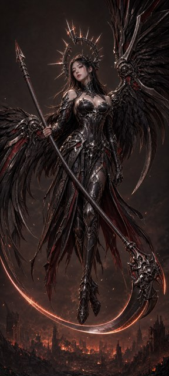
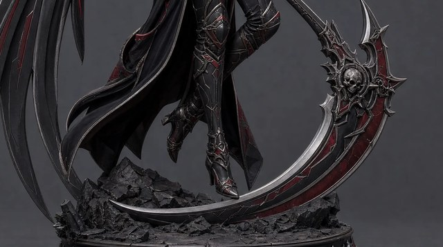
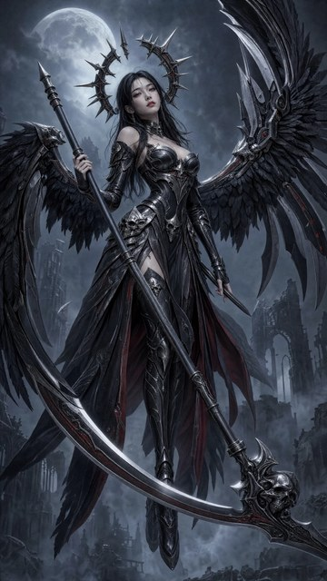
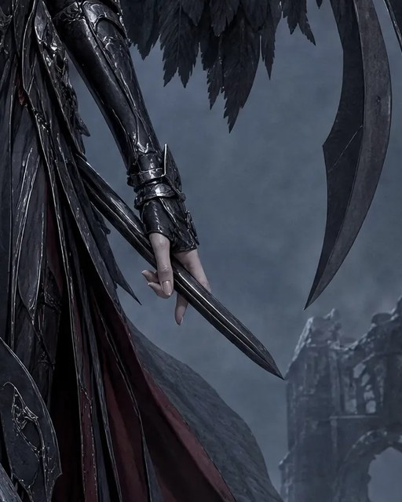
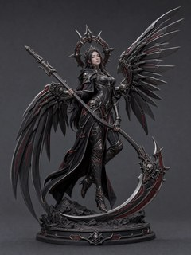
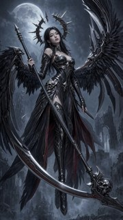

removals only
2 rolls- The minimal-ask rung: unify the doubled blade, clear the wing-top feather tufts
Input(s)W1 base + r3-w1-rem prompt
What we need from you
Two interpretation calls are folded into the prompts and should be checked before sign-off: 1. Read the full ask ↓
Planned spend against the round cap$2.20 / $4.00
Jake liked both wallpaper finalists but wants targeted fixes, not re-rolls: the scythe blade reshaped into a proper single reaper crescent that stays clear of the wings, the stray blade/feather elements above the wing joints removed, W2's free hand emptied of its unattached "ghost dagger", and — lower priority — W1's bowed haft straightened and a proper two-handed grip. An independent AI-tell crop audit of both picks (2026-08-07, recorded in reviews.jsonl) confirmed the doubled W1 blade and W2 ghost dagger cold, added two W2 targets (a waist skull with three eye sockets, a floating metal shard), and rated both images strong bases with no re-roll needed — while rating W1's haft bow structural, so the haft ask is priced as a cheap datapoint we do not chase.
Dimitri fixed the editor: flash31 only (the policy's surgical-edit default; the live Gemini catalog holds no newer Flash image model, and pro2k stays the named escalation for a twice-failed edit). The round's real question is edit strategy: how many asks a single flash31 pass will take on photoreal wallpaper work, whether a blade-shape exemplar beats words, and whether a sequential second pass or a crop-and-paste-back beats bigger single passes.
All cells run flash31 at 2K in Batch mode. Every full-frame arm edits the untouched r2 original (never another arm's output, except the two declared sequential cells), with the shared edit paragraphs byte-identical across each image's prompt files. Two rolls per independent full-frame arm — feature edits are a per-roll lottery — and one roll for the dependent and mechanism cells.
Input(s)W1 base + r3-w1-rem prompt
Input(s)W1 base + r3-w1-crit prompt
Input(s)W1 base + blade exemplar + r3-w1-critex prompt
Input(s)W1 base + r3-w1-all prompt
Input(s)W1-B roll 1 output + r3-w1-seq prompt
Input(s)W2 base + r3-w2-rem prompt
Input(s)W2 base + r3-w2-crit prompt
Input(s)W2 base + blade exemplar + r3-w2-critex prompt
Input(s)W2 base + r3-w2-all prompt
Input(s)W2-B roll 1 output + r3-w2-seq prompt
Input(s)W2 dagger-region crop + r3-w2-dagger prompt
19 rolls total — 11 choices, 2 + 2 + 2 + 2 + 1 + 2 + 2 + 2 + 2 + 1 + 1
That is 19 paid image calls: 8 full-frame arms × 2 rolls + 2 sequential cells + 1 crop cell. The W2-F edit is deterministically feather-composited back into the untouched 4K original as a free local step (r3-w2-daggercomp-1). Mix-and-match verdicts are welcome — the panel will show every arm beside its base with a before/after diff.
Resolution reality: flash31 returns ~2K canvases, so any full-frame W2 edit downscales the 4K Riverflow original — irrelevant for the 1080x2400 deliverable, and the untouched originals stay canonical on Drive. A W2 winner still needs its separately planned 9:16→9:20 extension round before delivery; W1 outputs remain native-9:20 shape and ship via a free local downscale. The W2-F composite is the exception: it keeps the full 4K canvas because only the crop region is regenerated.
Everything that goes in, grouped by the choice it belongs to. Click any image to zoom; open a prompt to read the exact text this round spends against. Crop sets show both the cut overview and every exact output crop.
Pure deletions on the W1 ember pick: unify the doubled blade arc and remove the feather tufts above the mechanical wing joints. The minimal-ask end of the bundle-size ladder.
scythe-valkyrie-r2-w1-gptimage2-2
projects/bluemneme/scythe-valkyrie/prompts/r3-w1-rem.txt
ATTACHED IMAGE One image is attached. IMAGE 1 is a finished photorealistic wallpaper artwork of an angel-of-death valkyrie. Your task is a SURGICAL EDIT: apply ONLY the corrections listed below and leave everything else untouched. EDIT — BLADE COUNT The scythe must have exactly ONE blade. In IMAGE 1 a second, parallel blade arc splits off below the main blade as it rises toward the ornate skull head on the lower VIEWER'S RIGHT. Remove the extra arc and close the gap so the weapon carries ONE single continuous blade, with the surrounding background restored where the extra arc was. EDIT — WING TOPS Feather tufts stick UP above the mechanical wing joints at the top of the wings. Remove every feather ABOVE the mechanical joints on both wings, restoring clean background sky above each joint. Feathers belong only BELOW and BEHIND the mechanical joint line; the joints themselves and the wings below them stay exactly as they are. PRESERVATION Apart from the edits listed above, reproduce IMAGE 1 EXACTLY: the same character, face, expression, hair, halo crown, armour and ornament detail, pose, wings, scythe, background, lighting, colour grading, and level of detail, at the same framing on the same tall canvas shape as IMAGE 1. Do not restyle, re-light, sharpen, or reinterpret anything. Add no new objects, no extra glow, and no text, labels, logos, or watermarks.
Removals plus the blade reshape: one consistent-curvature crescent, kept separate from the wings. The middle rung of the ladder.
scythe-valkyrie-r2-w1-gptimage2-2projects/bluemneme/scythe-valkyrie/prompts/r3-w1-crit.txt
ATTACHED IMAGE One image is attached. IMAGE 1 is a finished photorealistic wallpaper artwork of an angel-of-death valkyrie. Your task is a SURGICAL EDIT: apply ONLY the corrections listed below and leave everything else untouched. EDIT — BLADE COUNT The scythe must have exactly ONE blade. In IMAGE 1 a second, parallel blade arc splits off below the main blade as it rises toward the ornate skull head on the lower VIEWER'S RIGHT. Remove the extra arc and close the gap so the weapon carries ONE single continuous blade, with the surrounding background restored where the extra arc was. EDIT — BLADE SHAPE Reshape that single blade into a proper reaper-scythe blade: one long crescent with smooth, CONSISTENT curvature from the ornate skull head to a single sharp tip, thick at the head and tapering evenly along its whole length. Keep the blade IN FRONT of the character, and keep it clearly SEPARATE from the wings: visible background must remain between the blade and the wing masses at every point — the blade must never touch, join, or continue into a wing. EDIT — WING TOPS Feather tufts stick UP above the mechanical wing joints at the top of the wings. Remove every feather ABOVE the mechanical joints on both wings, restoring clean background sky above each joint. Feathers belong only BELOW and BEHIND the mechanical joint line; the joints themselves and the wings below them stay exactly as they are. PRESERVATION Apart from the edits listed above, reproduce IMAGE 1 EXACTLY: the same character, face, expression, hair, halo crown, armour and ornament detail, pose, wings, scythe, background, lighting, colour grading, and level of detail, at the same framing on the same tall canvas shape as IMAGE 1. Do not restyle, re-light, sharpen, or reinterpret anything. Add no new objects, no extra glow, and no text, labels, logos, or watermarks.
Same edits as W1-B, with the r1 best-blade crop attached as IMAGE 2 — tests whether a shape reference beats words for the blade reshape.
scythe-valkyrie-r2-w1-gptimage2-2scythe-valkyrie-r3-blade-exemplar
projects/bluemneme/scythe-valkyrie/prompts/r3-w1-critex.txt
ATTACHED IMAGES Two images are attached. IMAGE 1 is a finished photorealistic wallpaper artwork of an angel-of-death valkyrie — the image to edit. IMAGE 2 is a SHAPE REFERENCE ONLY: it shows the correct scythe-blade silhouette on a different render of the same character. Use IMAGE 2 only for the blade's shape, and copy nothing else from it — not its background, base, pose, colours, lighting, or framing. Your task is a SURGICAL EDIT of IMAGE 1: apply ONLY the corrections listed below and leave everything else untouched. EDIT — BLADE COUNT The scythe must have exactly ONE blade. In IMAGE 1 a second, parallel blade arc splits off below the main blade as it rises toward the ornate skull head on the lower VIEWER'S RIGHT. Remove the extra arc and close the gap so the weapon carries ONE single continuous blade, with the surrounding background restored where the extra arc was. EDIT — BLADE SHAPE Reshape that single blade into a proper reaper-scythe blade: one long crescent with smooth, CONSISTENT curvature from the ornate skull head to a single sharp tip, thick at the head and tapering evenly along its whole length — match the blade silhouette, curvature, and taper shown in IMAGE 2. Keep the blade IN FRONT of the character, and keep it clearly SEPARATE from the wings: visible background must remain between the blade and the wing masses at every point — the blade must never touch, join, or continue into a wing. EDIT — WING TOPS Feather tufts stick UP above the mechanical wing joints at the top of the wings. Remove every feather ABOVE the mechanical joints on both wings, restoring clean background sky above each joint. Feathers belong only BELOW and BEHIND the mechanical joint line; the joints themselves and the wings below them stay exactly as they are. PRESERVATION Apart from the edits listed above, reproduce IMAGE 1 EXACTLY: the same character, face, expression, hair, halo crown, armour and ornament detail, pose, wings, scythe, background, lighting, colour grading, and level of detail, at the same framing on the same tall canvas shape as IMAGE 1. Do not restyle, re-light, sharpen, or reinterpret anything. Add no new objects, no extra glow, and no text, labels, logos, or watermarks.
Critical bundle plus the lower-priority asks: straighten the haft (independent audit rates the bow structural — a cheap datapoint, not chased) and move the free hand to a two-handed grip. The maximal-ask rung.
scythe-valkyrie-r2-w1-gptimage2-2projects/bluemneme/scythe-valkyrie/prompts/r3-w1-all.txt
ATTACHED IMAGE One image is attached. IMAGE 1 is a finished photorealistic wallpaper artwork of an angel-of-death valkyrie. Your task is a SURGICAL EDIT: apply ONLY the corrections listed below and leave everything else untouched. EDIT — BLADE COUNT The scythe must have exactly ONE blade. In IMAGE 1 a second, parallel blade arc splits off below the main blade as it rises toward the ornate skull head on the lower VIEWER'S RIGHT. Remove the extra arc and close the gap so the weapon carries ONE single continuous blade, with the surrounding background restored where the extra arc was. EDIT — BLADE SHAPE Reshape that single blade into a proper reaper-scythe blade: one long crescent with smooth, CONSISTENT curvature from the ornate skull head to a single sharp tip, thick at the head and tapering evenly along its whole length. Keep the blade IN FRONT of the character, and keep it clearly SEPARATE from the wings: visible background must remain between the blade and the wing masses at every point — the blade must never touch, join, or continue into a wing. EDIT — WING TOPS Feather tufts stick UP above the mechanical wing joints at the top of the wings. Remove every feather ABOVE the mechanical joints on both wings, restoring clean background sky above each joint. Feathers belong only BELOW and BEHIND the mechanical joint line; the joints themselves and the wings below them stay exactly as they are. EDIT — HAFT Straighten the scythe haft into a perfectly STRAIGHT, rigid pole with a smooth cylindrical cross-section, running dead straight from the spear-like counterweight at the upper VIEWER'S LEFT to the ornate skull head at the lower VIEWER'S RIGHT. In IMAGE 1 the haft bows in a gentle curve — remove the bow completely while keeping the haft's position, angle, thickness, and armored detailing. EDIT — LOWER HAND Her lower armoured gauntlet hand currently hangs free beside her hip on the VIEWER'S RIGHT. Move it onto the haft where the haft passes beside her upper thigh: a natural, unmistakable five-fingered wrap around the haft, thumb visible, so she holds the scythe TWO-HANDED with the grips widely separated. Keep the arm's shoulder-to-hand anatomy unbroken and natural. PRESERVATION Apart from the edits listed above, reproduce IMAGE 1 EXACTLY: the same character, face, expression, hair, halo crown, armour and ornament detail, pose, wings, scythe, background, lighting, colour grading, and level of detail, at the same framing on the same tall canvas shape as IMAGE 1. Do not restyle, re-light, sharpen, or reinterpret anything. Add no new objects, no extra glow, and no text, labels, logos, or watermarks.
Haft + grip applied as a second pass over the W1-B roll 1 output (fixed input, declared at plan time). Prices drift-per-pass against the W1-D single pass. Skipped, recorded, and unsubstituted if the W1-B roll 1 output fails its fast base-integrity screen. Its input artifact exists only after wave 1, so no input image can render here at plan time; the experiment matrix declares the exact fixed input id.
Text-only — no image inputs; the prompt below is the whole input.
projects/bluemneme/scythe-valkyrie/prompts/r3-w1-seq.txt
ATTACHED IMAGE One image is attached. IMAGE 1 is a finished photorealistic wallpaper artwork of an angel-of-death valkyrie. Your task is a SURGICAL EDIT: apply ONLY the corrections listed below and leave everything else untouched. EDIT — HAFT Straighten the scythe haft into a perfectly STRAIGHT, rigid pole with a smooth cylindrical cross-section, running dead straight from the spear-like counterweight at the upper VIEWER'S LEFT to the ornate skull head at the lower VIEWER'S RIGHT. In IMAGE 1 the haft bows in a gentle curve — remove the bow completely while keeping the haft's position, angle, thickness, and armored detailing. EDIT — LOWER HAND Her lower armoured gauntlet hand currently hangs free beside her hip on the VIEWER'S RIGHT. Move it onto the haft where the haft passes beside her upper thigh: a natural, unmistakable five-fingered wrap around the haft, thumb visible, so she holds the scythe TWO-HANDED with the grips widely separated. Keep the arm's shoulder-to-hand anatomy unbroken and natural. PRESERVATION Apart from the edits listed above, reproduce IMAGE 1 EXACTLY: the same character, face, expression, hair, halo crown, armour and ornament detail, pose, wings, scythe, background, lighting, colour grading, and level of detail, at the same framing on the same tall canvas shape as IMAGE 1. Do not restyle, re-light, sharpen, or reinterpret anything. Add no new objects, no extra glow, and no text, labels, logos, or watermarks.
Pure deletions on the W2 fog pick: ghost dagger out of the free hand (fingertips restored), the waist skull back to two eye sockets, and the floating metal shard filled with fog.
scythe-valkyrie-r2-w2-riverflow25-1
projects/bluemneme/scythe-valkyrie/prompts/r3-w2-rem.txt
ATTACHED IMAGE One image is attached. IMAGE 1 is a finished photorealistic wallpaper artwork of an angel-of-death valkyrie. Your task is a SURGICAL EDIT: apply ONLY the corrections listed below and leave everything else untouched. EDIT — FREE HAND Her free hand on the VIEWER'S RIGHT, beside her hip, has a small extra dagger-like blade threaded between the fingers — it has no handle and attaches to nothing. Remove that blade completely and redraw the hand as a natural, relaxed EMPTY hand with five fingers, the palm and fingertips fully restored. She carries nothing except the great scythe. EDIT — WAIST SKULL The small sculpted skull ornament on her armour near the waist shows THREE eye sockets in a row. Redraw it as a normal skull with exactly TWO eye sockets, keeping its size, position, and material. EDIT — FLOATING SHARD A small, sharp, shiny metal fragment floats alone in the foggy gap on the VIEWER'S LEFT between the lower wing and her skirt, connected to nothing. Remove it completely and fill the area with the surrounding fog. PRESERVATION Apart from the edits listed above, reproduce IMAGE 1 EXACTLY: the same character, face, expression, hair, halo crown, armour and ornament detail, pose, wings, scythe, background, lighting, colour grading, and level of detail, at the same framing on the same tall canvas shape as IMAGE 1. Do not restyle, re-light, sharpen, or reinterpret anything. Add no new objects, no extra glow, and no text, labels, logos, or watermarks.
Removals plus the blade reshape (separate the blade tip from the left wing feathers) and the wing-top cleanup (no stray blade elements above the mechanical joints).
scythe-valkyrie-r2-w2-riverflow25-1projects/bluemneme/scythe-valkyrie/prompts/r3-w2-crit.txt
ATTACHED IMAGE One image is attached. IMAGE 1 is a finished photorealistic wallpaper artwork of an angel-of-death valkyrie. Your task is a SURGICAL EDIT: apply ONLY the corrections listed below and leave everything else untouched. EDIT — FREE HAND Her free hand on the VIEWER'S RIGHT, beside her hip, has a small extra dagger-like blade threaded between the fingers — it has no handle and attaches to nothing. Remove that blade completely and redraw the hand as a natural, relaxed EMPTY hand with five fingers, the palm and fingertips fully restored. She carries nothing except the great scythe. EDIT — WAIST SKULL The small sculpted skull ornament on her armour near the waist shows THREE eye sockets in a row. Redraw it as a normal skull with exactly TWO eye sockets, keeping its size, position, and material. EDIT — FLOATING SHARD A small, sharp, shiny metal fragment floats alone in the foggy gap on the VIEWER'S LEFT between the lower wing and her skirt, connected to nothing. Remove it completely and fill the area with the surrounding fog. EDIT — BLADE SHAPE Reshape the scythe blade into a proper reaper-scythe blade: exactly ONE long crescent with smooth, CONSISTENT curvature from the ornate skull head on the lower VIEWER'S RIGHT to a single sharp tip toward the lower VIEWER'S LEFT, thick at the head and tapering evenly along its whole length. Keep the blade IN FRONT of the character, and keep it clearly SEPARATE from the wings: visible background must remain between the blade tip and the long wing feathers on the VIEWER'S LEFT — the blade must never touch, join, or continue into a wing. EDIT — WING TOPS Stray blade elements stick UP above the mechanical wing joints at the top of the wings, most visibly on the VIEWER'S RIGHT wing. Remove the stray blade elements ABOVE the mechanical joints, restoring clean sky and fog above each joint. Wing-blades and feathers belong only BELOW and BEHIND the mechanical joint line; the joints themselves and the wing structure below them stay exactly as they are. PRESERVATION Apart from the edits listed above, reproduce IMAGE 1 EXACTLY: the same character, face, expression, hair, halo crown, armour and ornament detail, pose, wings, scythe, background, lighting, colour grading, and level of detail, at the same framing on the same tall canvas shape as IMAGE 1. Do not restyle, re-light, sharpen, or reinterpret anything. Add no new objects, no extra glow, and no text, labels, logos, or watermarks.
Same edits as W2-B, with the r1 best-blade crop attached as IMAGE 2.
scythe-valkyrie-r2-w2-riverflow25-1scythe-valkyrie-r3-blade-exemplarprojects/bluemneme/scythe-valkyrie/prompts/r3-w2-critex.txt
ATTACHED IMAGES Two images are attached. IMAGE 1 is a finished photorealistic wallpaper artwork of an angel-of-death valkyrie — the image to edit. IMAGE 2 is a SHAPE REFERENCE ONLY: it shows the correct scythe-blade silhouette on a different render of the same character. Use IMAGE 2 only for the blade's shape, and copy nothing else from it — not its background, base, pose, colours, lighting, or framing. Your task is a SURGICAL EDIT of IMAGE 1: apply ONLY the corrections listed below and leave everything else untouched. EDIT — FREE HAND Her free hand on the VIEWER'S RIGHT, beside her hip, has a small extra dagger-like blade threaded between the fingers — it has no handle and attaches to nothing. Remove that blade completely and redraw the hand as a natural, relaxed EMPTY hand with five fingers, the palm and fingertips fully restored. She carries nothing except the great scythe. EDIT — WAIST SKULL The small sculpted skull ornament on her armour near the waist shows THREE eye sockets in a row. Redraw it as a normal skull with exactly TWO eye sockets, keeping its size, position, and material. EDIT — FLOATING SHARD A small, sharp, shiny metal fragment floats alone in the foggy gap on the VIEWER'S LEFT between the lower wing and her skirt, connected to nothing. Remove it completely and fill the area with the surrounding fog. EDIT — BLADE SHAPE Reshape the scythe blade into a proper reaper-scythe blade: exactly ONE long crescent with smooth, CONSISTENT curvature from the ornate skull head on the lower VIEWER'S RIGHT to a single sharp tip toward the lower VIEWER'S LEFT, thick at the head and tapering evenly along its whole length — match the blade silhouette, curvature, and taper shown in IMAGE 2. Keep the blade IN FRONT of the character, and keep it clearly SEPARATE from the wings: visible background must remain between the blade tip and the long wing feathers on the VIEWER'S LEFT — the blade must never touch, join, or continue into a wing. EDIT — WING TOPS Stray blade elements stick UP above the mechanical wing joints at the top of the wings, most visibly on the VIEWER'S RIGHT wing. Remove the stray blade elements ABOVE the mechanical joints, restoring clean sky and fog above each joint. Wing-blades and feathers belong only BELOW and BEHIND the mechanical joint line; the joints themselves and the wing structure below them stay exactly as they are. PRESERVATION Apart from the edits listed above, reproduce IMAGE 1 EXACTLY: the same character, face, expression, hair, halo crown, armour and ornament detail, pose, wings, scythe, background, lighting, colour grading, and level of detail, at the same framing on the same tall canvas shape as IMAGE 1. Do not restyle, re-light, sharpen, or reinterpret anything. Add no new objects, no extra glow, and no text, labels, logos, or watermarks.
Critical bundle with the free-hand edit upgraded from "empty hand" to "gripping the haft two-handed" (the dagger removal is folded into that grip edit).
scythe-valkyrie-r2-w2-riverflow25-1projects/bluemneme/scythe-valkyrie/prompts/r3-w2-all.txt
ATTACHED IMAGE One image is attached. IMAGE 1 is a finished photorealistic wallpaper artwork of an angel-of-death valkyrie. Your task is a SURGICAL EDIT: apply ONLY the corrections listed below and leave everything else untouched. EDIT — FREE HAND Her free hand on the VIEWER'S RIGHT, beside her hip, has a small extra dagger-like blade threaded between the fingers — it has no handle and attaches to nothing. Remove that blade completely, and move the hand onto the scythe haft where the haft passes beside her upper thigh on the VIEWER'S RIGHT: a natural, unmistakable five-fingered wrap around the haft, thumb visible, so she holds the scythe TWO-HANDED with the grips widely separated. Keep the arm's shoulder-to-hand anatomy unbroken and natural. EDIT — WAIST SKULL The small sculpted skull ornament on her armour near the waist shows THREE eye sockets in a row. Redraw it as a normal skull with exactly TWO eye sockets, keeping its size, position, and material. EDIT — FLOATING SHARD A small, sharp, shiny metal fragment floats alone in the foggy gap on the VIEWER'S LEFT between the lower wing and her skirt, connected to nothing. Remove it completely and fill the area with the surrounding fog. EDIT — BLADE SHAPE Reshape the scythe blade into a proper reaper-scythe blade: exactly ONE long crescent with smooth, CONSISTENT curvature from the ornate skull head on the lower VIEWER'S RIGHT to a single sharp tip toward the lower VIEWER'S LEFT, thick at the head and tapering evenly along its whole length. Keep the blade IN FRONT of the character, and keep it clearly SEPARATE from the wings: visible background must remain between the blade tip and the long wing feathers on the VIEWER'S LEFT — the blade must never touch, join, or continue into a wing. EDIT — WING TOPS Stray blade elements stick UP above the mechanical wing joints at the top of the wings, most visibly on the VIEWER'S RIGHT wing. Remove the stray blade elements ABOVE the mechanical joints, restoring clean sky and fog above each joint. Wing-blades and feathers belong only BELOW and BEHIND the mechanical joint line; the joints themselves and the wing structure below them stay exactly as they are. PRESERVATION Apart from the edits listed above, reproduce IMAGE 1 EXACTLY: the same character, face, expression, hair, halo crown, armour and ornament detail, pose, wings, scythe, background, lighting, colour grading, and level of detail, at the same framing on the same tall canvas shape as IMAGE 1. Do not restyle, re-light, sharpen, or reinterpret anything. Add no new objects, no extra glow, and no text, labels, logos, or watermarks.
Grip-only second pass over the W2-B roll 1 output (fixed input, declared at plan time). Same skip rule as W1-E. Its input artifact exists only after wave 1, so no input image can render here at plan time; the experiment matrix declares the exact fixed input id.
Text-only — no image inputs; the prompt below is the whole input.
projects/bluemneme/scythe-valkyrie/prompts/r3-w2-seq.txt
ATTACHED IMAGE One image is attached. IMAGE 1 is a finished photorealistic wallpaper artwork of an angel-of-death valkyrie. Your task is a SURGICAL EDIT: apply ONLY the corrections listed below and leave everything else untouched. EDIT — FREE HAND Her free hand on the VIEWER'S RIGHT, beside her hip, is empty. Move it onto the scythe haft where the haft passes beside her upper thigh on the VIEWER'S RIGHT: a natural, unmistakable five-fingered wrap around the haft, thumb visible, so she holds the scythe TWO-HANDED with the grips widely separated. Keep the arm's shoulder-to-hand anatomy unbroken and natural. PRESERVATION Apart from the edits listed above, reproduce IMAGE 1 EXACTLY: the same character, face, expression, hair, halo crown, armour and ornament detail, pose, wings, scythe, background, lighting, colour grading, and level of detail, at the same framing on the same tall canvas shape as IMAGE 1. Do not restyle, re-light, sharpen, or reinterpret anything. Add no new objects, no extra glow, and no text, labels, logos, or watermarks.
The ghost-dagger removal run on a deterministic crop of the region, then deterministically feather-composited back into the untouched 4K original — locality outside the crop is guaranteed by construction. Tests the crop-and-paste-back mechanism for photoreal wallpaper repairs.
scythe-valkyrie-r3-w2-dagger-base
projects/bluemneme/scythe-valkyrie/prompts/r3-w2-dagger.txt
ATTACHED IMAGE One image is attached. IMAGE 1 is a CROP from a larger finished photorealistic artwork: a woman's bare hand emerging from an armoured vambrace beside dark layered drapery, with pale fog and a ruined tower behind. Your task is a SURGICAL EDIT: apply ONLY the correction listed below and leave everything else untouched. EDIT — REMOVE THE BLADE A dagger-like blade is threaded between the fingers of the hand — it has no handle and attaches to nothing. Remove that blade completely and redraw the hand as a natural, relaxed EMPTY hand with five fingers, the palm and fingertips fully restored where the blade covered them. PRESERVATION Apart from that edit, reproduce IMAGE 1 EXACTLY: the same hand pose and skin, the same vambrace and drapery, the same fog and ruins, the same lighting and colour grading, at the same framing on the same canvas shape as IMAGE 1 — do not zoom, crop further, or extend the scene. Add no new objects, no extra glow, and no text, labels, logos, or watermarks.
Jake's wallpaper, Jake's eye — his pick decides, Dimitri keeps the art gate. Reading notes:
Machine checks run in two explicit lanes:
blind_detect_round.py manifest judges them against spec v0.5's wallpaper section. Completed records append to reviews.jsonl; every blind-vs-crop disagreement gets a mandatory human look. Per the r1/r2 precedent the detector calls are advisory navigation; Jake's and Dimitri's eye-verdicts decide, and no per-artifact reconciliation records are required to close the round.Two interpretation calls are folded into the prompts and should be checked before sign-off:
Then: Jake's comments on the arms (tweaks fold in as plan edits before sign-off), and Dimitri's sign-off as the spend gate. On the results panel, Jake picks per image; delivery is the free downscale (W1) or the separately planned extension round (W2).
Planning estimate: image generation ≈ $1.25 (19 flash31 Batch calls at 2K; r2 measured ~$0.052/image single-input — the four exemplar cells carry a second input image, so the estimate uses ~$0.065 average). FAST evaluation is unmetered. SLOW evaluation reserves $0.95 (≥$0.05 × 19, the skill's floor). The W2-F composite, locality screens, and any W1 delivery downscale are free local operations. Planned total ≈ $2.20. Proposed round cap $4.00 USD, no Meshy credits — headroom covers conservative in-flight reservations, not extra work. Live provider metadata and the detector's printed preflight ceiling remain authoritative at execution time.
scythe-valkyrie-r2-w1-gptimage2-2 (ember, native 9:20) and scythe-valkyrie-r2-w2-riverflow25-1 (cold fog, 9:16); the r1 best-blade exemplar crop scythe-valkyrie-r3-blade-exemplar (deterministic crop of r1-v3-riverflow25-1); the deterministic W2 dagger-region crop scythe-valkyrie-r3-w2-dagger-base; eleven committed prompts/r3-*.txt edit promptsgenerated/: scythe-valkyrie-r3-w{1,2}-{rem,crit,critex,all,seq}-N, scythe-valkyrie-r3-w2-dagger-1, and scythe-valkyrie-r3-w2-daggercomp-1claude/scythe-valkyrie-r3-wallpaper-editsround-feedback.jsonl and per-artifact reviews.jsonl records, alongside an independent same-day AI-tell crop audit of both picksprompts, matrix, commands (pipeline detail)
round-feedback.jsonl record (reviewer jake, joint Jake+Dimitri list relayed by Dimitri 2026-08-07, carried to r3), plus two independent claude-crop-audit AI-tell records for the picks (all 2026-08-07).prompts/r3-*.txt, composed from named shared blocks. Within each image's family the shared edit paragraphs are byte-identical (verified mechanically at authoring); the deliberate divergences are named per arm: critex swaps the blade-shape paragraph for an IMAGE 2-referencing variant and uses the two-image header; all (W2) swaps the empty-hand paragraph for the grip variant; seq (W2) uses the already-empty-hand grip variant. Every prompt opens with an ATTACHED IMAGE(S) paragraph declaring the count and role of each input, matching its matrix row, and closes with the shared PRESERVATION block.lineage.json as derived-crop records:scythe-valkyrie-r3-blade-exemplar.png = PIL crop (170,1250,1660,2080) of r1-v3-riverflow25-1 (Jake's r1 best-blade pick);scythe-valkyrie-r3-w2-dagger-base.png = PIL crop (1180,1450,1860,2300) of r2-w2-riverflow25-1.gemini_gen.py --rolls 2 invocation per stem (grouped Batch call, native --resume-run recovery); the three single-roll cells use --rolls 1. All cells are Gemini, so there is no synchronous-provider ambiguity lane this round; recovery is always resume-never-resubmit.r3-w1-crit-1, r3-w2-crit-1) land and pass a fast base-integrity screen (image decodes, canvas shape sane, figure present). A failed screen skips that sequential cell — recorded in rounds.md, no substitute input; this is the planned stop-early gate.| # | Source / base (input) | Prompt | Out stem (output) | Rolls | Wave |
|---|---|---|---|---|---|
| 1 | r2-w1-gptimage2-2 (1 image, declared) | prompts/r3-w1-rem.txt | scythe-valkyrie-r3-w1-rem | 2 | 1 |
| 2 | r2-w1-gptimage2-2 (1 image, declared) | prompts/r3-w1-crit.txt | scythe-valkyrie-r3-w1-crit | 2 | 1 |
| 3 | r2-w1-gptimage2-2 + r3-blade-exemplar (2 images, declared) | prompts/r3-w1-critex.txt | scythe-valkyrie-r3-w1-critex | 2 | 1 |
| 4 | r2-w1-gptimage2-2 (1 image, declared) | prompts/r3-w1-all.txt | scythe-valkyrie-r3-w1-all | 2 | 1 |
| 5 | r3-w1-crit-1 (1 image, declared; fixed at plan time) | prompts/r3-w1-seq.txt | scythe-valkyrie-r3-w1-seq | 1 | 2 |
| 6 | r2-w2-riverflow25-1 (1 image, declared) | prompts/r3-w2-rem.txt | scythe-valkyrie-r3-w2-rem | 2 | 1 |
| 7 | r2-w2-riverflow25-1 (1 image, declared) | prompts/r3-w2-crit.txt | scythe-valkyrie-r3-w2-crit | 2 | 1 |
| 8 | r2-w2-riverflow25-1 + r3-blade-exemplar (2 images, declared) | prompts/r3-w2-critex.txt | scythe-valkyrie-r3-w2-critex | 2 | 1 |
| 9 | r2-w2-riverflow25-1 (1 image, declared) | prompts/r3-w2-all.txt | scythe-valkyrie-r3-w2-all | 2 | 1 |
| 10 | r3-w2-crit-1 (1 image, declared; fixed at plan time) | prompts/r3-w2-seq.txt | scythe-valkyrie-r3-w2-seq | 1 | 2 |
| 11 | r3-w2-dagger-base (1 image, declared) | prompts/r3-w2-dagger.txt | scythe-valkyrie-r3-w2-dagger | 1 | 1 |
Rows 1–4 and 6–9 plan two same-stem rolls (-1 and -2); rolls append and never overwrite. Row 11's output is deterministically composited into scythe-valkyrie-r3-w2-daggercomp-1 (free local step below). 19 paid calls total, reconciling with the choices table.
set -euo pipefail
python3 tools/render_runbook.py \
--runbook projects/bluemneme/scythe-valkyrie/runbooks/r3-runbook.md \
--cases projects/bluemneme/scythe-valkyrie/runbooks/r3-cases.json \
--lineage projects/bluemneme/scythe-valkyrie/lineage.json \
--review-pending --project "BlueMneme" --character "Scythe Valkyrie" \
--out /tmp/scythe-valkyrie-r3-runbook
python3 tools/publish_review.py /tmp/scythe-valkyrie-r3-runbook \
--slug bluemneme/scythe-valkyrie/r3-runbook \
--title "Scythe Valkyrie — Round 3 runbook" \
--message "Publish Scythe Valkyrie round 3 runbook"
python3 tools/discord_share.py --channel scythe-valkyrie \
--post-header --headline "Round 3 — Scythe Valkyrie" \
--status "PROPOSED — wallpaper edit round published for Jake's comment; awaiting sign-off; no generation yet" \
--decision "Edit strategy on the two picks: which arm's fixes read best? Two prompt-interpretation checks in the runbook need Jake's eyes." \
--spend-state "\$0.00 of the \$4.00 cap" \
--spend-estimate "≈\$2.20 planned: 19 flash31 edit candidates + screening, no Meshy calls" \
--artifact-link "https://lackofcheese.github.io/ai-stl-review/reviews/bluemneme/scythe-valkyrie/r3-runbook/" \
--artifact-label Runbook \
--once scythe-valkyrie-r3-header
python3 tools/discord_share.py --channel scythe-valkyrie \
--thread <header-message-id> --thread-name "Round 3 — Scythe Valkyrie updates" \
--once scythe-valkyrie-r3-proposed-announcement \
--message "<round-open announcement>"On Dimitri's sign-off: flip Status: to Approved — not started (Dimitri, <date>), commit and push, re-publish this page from that commit, then append the gate pinning that exact commit and its published render. Post the approval reply and advance the header once the status change is on main.
python3 tools/round_gate.py append \
--file projects/bluemneme/scythe-valkyrie/round-gates.jsonl \
--round r3 --gate greenlight --actor dimitri --source cli \
--note "<quote or faithful summary of Dimitri's approval>" \
--runbook-sha "$(git rev-parse HEAD)" \
--published-html "$AI_STL_REVIEW_DIR/reviews/bluemneme/scythe-valkyrie/r3-runbook/index.html"
# commit + push the gate line, then:
python3 tools/round_gate.py verify \
--file projects/bluemneme/scythe-valkyrie/round-gates.jsonl --round r3 \
--published-html "$AI_STL_REVIEW_DIR/reviews/bluemneme/scythe-valkyrie/r3-runbook/index.html"The start PR changes current state in rounds.md, not this frozen plan. After Dimitri approves and merges it, execution begins with the exact fail-closed shape from the skill:
set -euo pipefail
git fetch origin main
test "$(git rev-parse HEAD)" = "$(git rev-parse origin/main)"
python3 tools/round_gate.py verify \
--file projects/bluemneme/scythe-valkyrie/round-gates.jsonl --round r3 \
--published-html "${AI_STL_REVIEW_DIR:-../ai-stl-review}/reviews/bluemneme/scythe-valkyrie/r3-runbook/index.html"
test "$(git rev-parse HEAD)" = "$(git rev-parse origin/main)"
# Append the Discord start reply with a destination-scoped --once id.
# Advance its header using that completed reply's --event-id.
# Only then run the paid provider commands below.Per-cell logs under notes/, immediate Drive push, final unconditional sweep. Recovery is Gemini-only this round: resume with the recorded run id (--resume-run, or gemini_batch.py list --remote + attach when the id never reached the log); never resubmit a submitted Batch.
set -euo pipefail
T=projects/bluemneme/scythe-valkyrie
mkdir -p "$T/generated" "$T/notes"
# Seed the Gemini balance on this host if not already current (USD):
# python3 tools/spend_preflight.py set-balance gemini AMOUNT_USD
# The two bases and the two deterministic crops must already match Drive:
bash tools/drive_sync.sh pull "$T/generated"
PIDS=()
gen() { # gen <stem> <rolls> <prompt> <log> <image...>
local stem="$1" rolls="$2" prompt="$3" log="$4"; shift 4
local args=()
for img in "$@"; do args+=(--image "$img"); done
( python3 tools/gemini_gen.py --prompt-file "$prompt" "${args[@]}" \
--out-dir "$T/generated" --out-stem "$stem" \
--model gemini-3.1-flash-image --image-size 2K --rolls "$rolls" \
--drive-sync 2>&1 | tee -a "$T/notes/$log" ) &
PIDS+=($!)
}
W1="$T/generated/scythe-valkyrie-r2-w1-gptimage2-2.png"
W2="$T/generated/scythe-valkyrie-r2-w2-riverflow25-1.webp"
EX="$T/generated/scythe-valkyrie-r3-blade-exemplar.png"
DG="$T/generated/scythe-valkyrie-r3-w2-dagger-base.png"
gen scythe-valkyrie-r3-w1-rem 2 "$T/prompts/r3-w1-rem.txt" r3-gen-w1-rem.log "$W1"
gen scythe-valkyrie-r3-w1-crit 2 "$T/prompts/r3-w1-crit.txt" r3-gen-w1-crit.log "$W1"
gen scythe-valkyrie-r3-w1-critex 2 "$T/prompts/r3-w1-critex.txt" r3-gen-w1-critex.log "$W1" "$EX"
gen scythe-valkyrie-r3-w1-all 2 "$T/prompts/r3-w1-all.txt" r3-gen-w1-all.log "$W1"
gen scythe-valkyrie-r3-w2-rem 2 "$T/prompts/r3-w2-rem.txt" r3-gen-w2-rem.log "$W2"
gen scythe-valkyrie-r3-w2-crit 2 "$T/prompts/r3-w2-crit.txt" r3-gen-w2-crit.log "$W2"
gen scythe-valkyrie-r3-w2-critex 2 "$T/prompts/r3-w2-critex.txt" r3-gen-w2-critex.log "$W2" "$EX"
gen scythe-valkyrie-r3-w2-all 2 "$T/prompts/r3-w2-all.txt" r3-gen-w2-all.log "$W2"
gen scythe-valkyrie-r3-w2-dagger 1 "$T/prompts/r3-w2-dagger.txt" r3-gen-w2-dagger.log "$DG"
FAIL=0
for pid in "${PIDS[@]}"; do wait "$pid" || FAIL=1; done
bash tools/drive_sync.sh push "$T/generated"
(( FAIL == 0 )) || {
echo "a cell failed — resume its recorded Batch run (never resubmit)" >&2
exit 1
}Base-integrity screen for each declared input (r3-w1-crit-1, r3-w2-crit-1): the file decodes, the canvas is the expected tall shape, and the FAST crop audit confirms an intact single figure (a failed edit is still a valid seq base if the figure is intact; a corrupted/garbled output is not). On a failed screen, skip that seq cell and record the skip in rounds.md — no substitute input.
set -euo pipefail
T=projects/bluemneme/scythe-valkyrie
C1=$(compgen -G "$T/generated/scythe-valkyrie-r3-w1-crit-1.*" | head -n1)
C2=$(compgen -G "$T/generated/scythe-valkyrie-r3-w2-crit-1.*" | head -n1)
test -n "$C1" && python3 tools/gemini_gen.py \
--prompt-file "$T/prompts/r3-w1-seq.txt" --image "$C1" \
--out-dir "$T/generated" --out-stem scythe-valkyrie-r3-w1-seq \
--model gemini-3.1-flash-image --image-size 2K --rolls 1 \
--drive-sync 2>&1 | tee -a "$T/notes/r3-gen-w1-seq.log"
test -n "$C2" && python3 tools/gemini_gen.py \
--prompt-file "$T/prompts/r3-w2-seq.txt" --image "$C2" \
--out-dir "$T/generated" --out-stem scythe-valkyrie-r3-w2-seq \
--model gemini-3.1-flash-image --image-size 2K --rolls 1 \
--drive-sync 2>&1 | tee -a "$T/notes/r3-gen-w2-seq.log"
bash tools/drive_sync.sh push "$T/generated"The flash31 crop edit comes back at flash's own resolution; resize it back to the exact 680x850 crop, feather-composite into the untouched 4K original at (1180,1450), and register the derived artifact:
python3 - <<'EOF'
from PIL import Image
import numpy as np, glob
T = 'projects/bluemneme/scythe-valkyrie/generated/'
edit = Image.open(glob.glob(T+'scythe-valkyrie-r3-w2-dagger-1.*')[0]).convert('RGB').resize((680,850), Image.LANCZOS)
base = Image.open(T+'scythe-valkyrie-r2-w2-riverflow25-1.webp').convert('RGB')
m = np.zeros((850,680), dtype=np.float32); F = 48 # feather px
for i in range(850):
for j in range(680):
m[i,j] = min(1.0, min(i, 849-i, j, 679-j) / F)
mask = Image.fromarray((m*255).astype('uint8'))
base.paste(edit, (1180,1450), mask)
base.save(T+'scythe-valkyrie-r3-w2-daggercomp-1.png')
EOF
bash tools/drive_sync.sh push projects/bluemneme/scythe-valkyrie/generated
# then append the derived-crop lineage record for r3-w2-daggercomp-1
# (parents: r3-w2-dagger-1 + r2-w2-riverflow25-1, this exact command).tools/review_log.py (reviewer claude-crop-audit).rounds.md (r2's template evidence was 9:20-ish but not pixel-exact).Expected set = the 19 reviewable outputs: -1/-2 of the eight full-frame stems, the up-to-two seq cells (minus any recorded skip), and r3-w2-daggercomp-1. The raw r3-w2-dagger-1 crop output is excluded (not a full-frame candidate; its evidence lives in the composite). Build the manifest with the same exact-set gate shape as r2 (enumerate expected ids independently, refuse missing/duplicate/extra), submit one two-wave Batch run against spec.md, resume — never resubmit — after interruption, and require the completeness postcondition (blind-detect records from THIS run for all and only the expected ids) before the panel is rebuilt COMPLETE.
r3-panel.json (asks + next_steps mandatory; runbook field set): every card shows the arm beside its base with the locality-diff figures in the card notes; the two base originals head the auto-derived core inputs strip. Share as PROVISIONAL — slow checks pending once FAST is complete on all landed outputs; rebuild as COMPLETE when the blind run lands. Public Pages publication for Jake needs Dimitri's separate per-review OK.rounds.md); a W2 winner closes this round on the pick, with its 9:16→9:20 scenery extension planned as its own follow-up round. If every arm loses to its base, the round closes reject-all and the untouched r2 picks stand.projects/bluemneme/scythe-valkyrie/prompts/r2-w1-ember.txt
OUTPUT AND CAMERA A photorealistic full-body cinematic character render of an original character, composed as a premium PHONE WALLPAPER in tall 9:20 portrait orientation for a 1080x2400 screen. Show ONE figure only, in a NEAR-FRONTAL THREE-QUARTER view, large in frame — she fills most of the frame height and is the unambiguous subject, with softly dramatic lighting and crisp detail on the character over a quieter, softer background. The complete scythe from counterweight to blade tip stays inside the frame; the wings may run off the frame edges rather than shrinking her. This is character concept art, not a photograph of a toy: no presentation card, no watermark, and no text, labels, logos, or game marks anywhere in the image. HAIR AND HALO — NO HOOD, CROWN FULLY REVEALED She wears NO hood and no mantle: her hair and face are fully revealed. Rising above and behind her head is her DARK DEATH CROWN — an ominous halo-like crown in the suit's own design language: SPIKY radiating blades forming a deliberately BROKEN, PARTIAL arc — never a full closed circle — dark gunmetal with silver edge highlights, grimdark, ceremonial, and ominous, reading clearly as a crown of death. It is mounted solidly behind her head through visible sculpted supports, and it is not any existing franchise halo design. HELD-CONSTANT CHARACTER PROGRAM She is an original ANGEL-OF-DEATH VALKYRIE — an elegant, ominous, ceremonial reaper, played absolutely straight. Slender adult feminine build with realistic proportions, not heroic exaggeration. Her face has mature East Asian features, a calm direct gaze, and a softly angular oval face — an original face, no real person's likeness. Her long dark hair is elegant and sculptural; it may hang with a gentle echo of the wing arc, but it must NOT stream as if she were mid-attack. Her suit is a sleek, solid death-valkyrie armor in an original design language: dark gunmetal and black primary surfaces, silver structural framing and edge highlights, restrained deep-red accents. Her lower body wears a SECTIONED METAL SKIRT that reads as a skirt/cloak hybrid, with separate shaped armour on each leg and armored boots. The chestplate leaves a slight gap of bare skin between its top edge and her neck — a modest decolletage. Panel lines are bold and sculptural. The styling motif is skull-and-death themed — ominous, elegant, ceremonial — expressed through the sculpted forms themselves, never through printed graphics. Her WINGS are a dark wing array MIXING BIOLOGICAL AND MECHANICAL construction: dark crow-like feathering layered with articulated SOLID metal wing-blades, silver structural framing, and red accents. EXACTLY TWO wings attach through explicit, solid mechanical roots at her upper back — one spreading on the VIEWER'S LEFT and one on the VIEWER'S RIGHT, never both on one side — and they curve gently INWARDS to suit the tall frame; asymmetry between the two wings is welcome. Never detached, never floating free of her back. Her ONLY prop is a GREAT SCYTHE in the same design language — an elegant valkyrie weapon, not a farm tool. The haft is perfectly STRAIGHT with a smooth CYLINDRICAL cross-section — never curved, never hexagonal or faceted — armored in the suit's design language, with a spear-like counterweight projecting beyond the upper grip. The blade is exactly ONE long blade with smooth, CONSISTENT curvature along its whole length, joined to the haft by an ornate mechanical head — techno-gothic, and never a second blade anywhere on the weapon. She holds it two-handed with the grips widely separated: BOTH hands are unmistakable five-fingered wraps around the clean haft, thumbs visible, with unbroken shoulder-to-hand anatomy. She carries nothing else — no firearm, no staff, no second prop. POSE AND COMPOSITION The pose is POISED, STATUESQUE, and OMINOUS — a controlled character portrait, never a mid-swing action frame. She LEVITATES: both feet float clearly above the ground, armored toes pointed downward, with nothing touching or supporting her. Even while floating, her body holds a tall near-frontal three-quarter CONTRAPPOSTO with a pronounced vertical S-curve: the pelvis sits under a lifted, backward-arched chest, and her head tilts back and to the side while her eyes turn toward the viewer. The VIEWER'S RIGHT leg is long and nearly straight as if carrying weight; the VIEWER'S LEFT leg is relaxed and slightly bent. Her upper hand grips the haft around waist level on the VIEWER'S LEFT; her lower hand grips beside her upper thigh on the VIEWER'S RIGHT. The haft cuts steeply from upper VIEWER'S LEFT to lower VIEWER'S RIGHT, passing IN FRONT of her body — the scythe is on full display, never hidden behind her. The ornate blade head sits low on the VIEWER'S RIGHT, and the long blade sweeps across IN FRONT of her legs toward the lower VIEWER'S LEFT with clearly visible clearance from her body. One large wing mass rises toward the upper VIEWER'S RIGHT; the other sweeps down and out toward the lower VIEWER'S LEFT, opposing the haft diagonal and swirling the composition while the body itself stays still. BACKGROUND AND GLOW — W1 EMBER AFTERMATH Far below and behind her, a ruined city reduced to rubble: low broken silhouettes, drifting smoke, sparse rising embers, a deep warm ember light glowing low in the scene under a dark sky. The background stays soft, low-contrast, and uncluttered — all focus stays on the character, and the quiet destruction implies she is partly responsible for it. A SUBTLE ember-orange energy radiance traces the blade edge and the halo spikes — restrained and dim, with no lens flares, no bright beams, and no explosions of light.
none — text-only generation
projects/bluemneme/scythe-valkyrie/prompts/r2-w1-ember.txt
OUTPUT AND CAMERA A photorealistic full-body cinematic character render of an original character, composed as a premium PHONE WALLPAPER in tall 9:20 portrait orientation for a 1080x2400 screen. Show ONE figure only, in a NEAR-FRONTAL THREE-QUARTER view, large in frame — she fills most of the frame height and is the unambiguous subject, with softly dramatic lighting and crisp detail on the character over a quieter, softer background. The complete scythe from counterweight to blade tip stays inside the frame; the wings may run off the frame edges rather than shrinking her. This is character concept art, not a photograph of a toy: no presentation card, no watermark, and no text, labels, logos, or game marks anywhere in the image. HAIR AND HALO — NO HOOD, CROWN FULLY REVEALED She wears NO hood and no mantle: her hair and face are fully revealed. Rising above and behind her head is her DARK DEATH CROWN — an ominous halo-like crown in the suit's own design language: SPIKY radiating blades forming a deliberately BROKEN, PARTIAL arc — never a full closed circle — dark gunmetal with silver edge highlights, grimdark, ceremonial, and ominous, reading clearly as a crown of death. It is mounted solidly behind her head through visible sculpted supports, and it is not any existing franchise halo design. HELD-CONSTANT CHARACTER PROGRAM She is an original ANGEL-OF-DEATH VALKYRIE — an elegant, ominous, ceremonial reaper, played absolutely straight. Slender adult feminine build with realistic proportions, not heroic exaggeration. Her face has mature East Asian features, a calm direct gaze, and a softly angular oval face — an original face, no real person's likeness. Her long dark hair is elegant and sculptural; it may hang with a gentle echo of the wing arc, but it must NOT stream as if she were mid-attack. Her suit is a sleek, solid death-valkyrie armor in an original design language: dark gunmetal and black primary surfaces, silver structural framing and edge highlights, restrained deep-red accents. Her lower body wears a SECTIONED METAL SKIRT that reads as a skirt/cloak hybrid, with separate shaped armour on each leg and armored boots. The chestplate leaves a slight gap of bare skin between its top edge and her neck — a modest decolletage. Panel lines are bold and sculptural. The styling motif is skull-and-death themed — ominous, elegant, ceremonial — expressed through the sculpted forms themselves, never through printed graphics. Her WINGS are a dark wing array MIXING BIOLOGICAL AND MECHANICAL construction: dark crow-like feathering layered with articulated SOLID metal wing-blades, silver structural framing, and red accents. EXACTLY TWO wings attach through explicit, solid mechanical roots at her upper back — one spreading on the VIEWER'S LEFT and one on the VIEWER'S RIGHT, never both on one side — and they curve gently INWARDS to suit the tall frame; asymmetry between the two wings is welcome. Never detached, never floating free of her back. Her ONLY prop is a GREAT SCYTHE in the same design language — an elegant valkyrie weapon, not a farm tool. The haft is perfectly STRAIGHT with a smooth CYLINDRICAL cross-section — never curved, never hexagonal or faceted — armored in the suit's design language, with a spear-like counterweight projecting beyond the upper grip. The blade is exactly ONE long blade with smooth, CONSISTENT curvature along its whole length, joined to the haft by an ornate mechanical head — techno-gothic, and never a second blade anywhere on the weapon. She holds it two-handed with the grips widely separated: BOTH hands are unmistakable five-fingered wraps around the clean haft, thumbs visible, with unbroken shoulder-to-hand anatomy. She carries nothing else — no firearm, no staff, no second prop. POSE AND COMPOSITION The pose is POISED, STATUESQUE, and OMINOUS — a controlled character portrait, never a mid-swing action frame. She LEVITATES: both feet float clearly above the ground, armored toes pointed downward, with nothing touching or supporting her. Even while floating, her body holds a tall near-frontal three-quarter CONTRAPPOSTO with a pronounced vertical S-curve: the pelvis sits under a lifted, backward-arched chest, and her head tilts back and to the side while her eyes turn toward the viewer. The VIEWER'S RIGHT leg is long and nearly straight as if carrying weight; the VIEWER'S LEFT leg is relaxed and slightly bent. Her upper hand grips the haft around waist level on the VIEWER'S LEFT; her lower hand grips beside her upper thigh on the VIEWER'S RIGHT. The haft cuts steeply from upper VIEWER'S LEFT to lower VIEWER'S RIGHT, passing IN FRONT of her body — the scythe is on full display, never hidden behind her. The ornate blade head sits low on the VIEWER'S RIGHT, and the long blade sweeps across IN FRONT of her legs toward the lower VIEWER'S LEFT with clearly visible clearance from her body. One large wing mass rises toward the upper VIEWER'S RIGHT; the other sweeps down and out toward the lower VIEWER'S LEFT, opposing the haft diagonal and swirling the composition while the body itself stays still. BACKGROUND AND GLOW — W1 EMBER AFTERMATH Far below and behind her, a ruined city reduced to rubble: low broken silhouettes, drifting smoke, sparse rising embers, a deep warm ember light glowing low in the scene under a dark sky. The background stays soft, low-contrast, and uncluttered — all focus stays on the character, and the quiet destruction implies she is partly responsible for it. A SUBTLE ember-orange energy radiance traces the blade edge and the halo spikes — restrained and dim, with no lens flares, no bright beams, and no explosions of light.
none — text-only generation
projects/bluemneme/scythe-valkyrie/prompts/r2-w1-ember.txt
OUTPUT AND CAMERA A photorealistic full-body cinematic character render of an original character, composed as a premium PHONE WALLPAPER in tall 9:20 portrait orientation for a 1080x2400 screen. Show ONE figure only, in a NEAR-FRONTAL THREE-QUARTER view, large in frame — she fills most of the frame height and is the unambiguous subject, with softly dramatic lighting and crisp detail on the character over a quieter, softer background. The complete scythe from counterweight to blade tip stays inside the frame; the wings may run off the frame edges rather than shrinking her. This is character concept art, not a photograph of a toy: no presentation card, no watermark, and no text, labels, logos, or game marks anywhere in the image. HAIR AND HALO — NO HOOD, CROWN FULLY REVEALED She wears NO hood and no mantle: her hair and face are fully revealed. Rising above and behind her head is her DARK DEATH CROWN — an ominous halo-like crown in the suit's own design language: SPIKY radiating blades forming a deliberately BROKEN, PARTIAL arc — never a full closed circle — dark gunmetal with silver edge highlights, grimdark, ceremonial, and ominous, reading clearly as a crown of death. It is mounted solidly behind her head through visible sculpted supports, and it is not any existing franchise halo design. HELD-CONSTANT CHARACTER PROGRAM She is an original ANGEL-OF-DEATH VALKYRIE — an elegant, ominous, ceremonial reaper, played absolutely straight. Slender adult feminine build with realistic proportions, not heroic exaggeration. Her face has mature East Asian features, a calm direct gaze, and a softly angular oval face — an original face, no real person's likeness. Her long dark hair is elegant and sculptural; it may hang with a gentle echo of the wing arc, but it must NOT stream as if she were mid-attack. Her suit is a sleek, solid death-valkyrie armor in an original design language: dark gunmetal and black primary surfaces, silver structural framing and edge highlights, restrained deep-red accents. Her lower body wears a SECTIONED METAL SKIRT that reads as a skirt/cloak hybrid, with separate shaped armour on each leg and armored boots. The chestplate leaves a slight gap of bare skin between its top edge and her neck — a modest decolletage. Panel lines are bold and sculptural. The styling motif is skull-and-death themed — ominous, elegant, ceremonial — expressed through the sculpted forms themselves, never through printed graphics. Her WINGS are a dark wing array MIXING BIOLOGICAL AND MECHANICAL construction: dark crow-like feathering layered with articulated SOLID metal wing-blades, silver structural framing, and red accents. EXACTLY TWO wings attach through explicit, solid mechanical roots at her upper back — one spreading on the VIEWER'S LEFT and one on the VIEWER'S RIGHT, never both on one side — and they curve gently INWARDS to suit the tall frame; asymmetry between the two wings is welcome. Never detached, never floating free of her back. Her ONLY prop is a GREAT SCYTHE in the same design language — an elegant valkyrie weapon, not a farm tool. The haft is perfectly STRAIGHT with a smooth CYLINDRICAL cross-section — never curved, never hexagonal or faceted — armored in the suit's design language, with a spear-like counterweight projecting beyond the upper grip. The blade is exactly ONE long blade with smooth, CONSISTENT curvature along its whole length, joined to the haft by an ornate mechanical head — techno-gothic, and never a second blade anywhere on the weapon. She holds it two-handed with the grips widely separated: BOTH hands are unmistakable five-fingered wraps around the clean haft, thumbs visible, with unbroken shoulder-to-hand anatomy. She carries nothing else — no firearm, no staff, no second prop. POSE AND COMPOSITION The pose is POISED, STATUESQUE, and OMINOUS — a controlled character portrait, never a mid-swing action frame. She LEVITATES: both feet float clearly above the ground, armored toes pointed downward, with nothing touching or supporting her. Even while floating, her body holds a tall near-frontal three-quarter CONTRAPPOSTO with a pronounced vertical S-curve: the pelvis sits under a lifted, backward-arched chest, and her head tilts back and to the side while her eyes turn toward the viewer. The VIEWER'S RIGHT leg is long and nearly straight as if carrying weight; the VIEWER'S LEFT leg is relaxed and slightly bent. Her upper hand grips the haft around waist level on the VIEWER'S LEFT; her lower hand grips beside her upper thigh on the VIEWER'S RIGHT. The haft cuts steeply from upper VIEWER'S LEFT to lower VIEWER'S RIGHT, passing IN FRONT of her body — the scythe is on full display, never hidden behind her. The ornate blade head sits low on the VIEWER'S RIGHT, and the long blade sweeps across IN FRONT of her legs toward the lower VIEWER'S LEFT with clearly visible clearance from her body. One large wing mass rises toward the upper VIEWER'S RIGHT; the other sweeps down and out toward the lower VIEWER'S LEFT, opposing the haft diagonal and swirling the composition while the body itself stays still. BACKGROUND AND GLOW — W1 EMBER AFTERMATH Far below and behind her, a ruined city reduced to rubble: low broken silhouettes, drifting smoke, sparse rising embers, a deep warm ember light glowing low in the scene under a dark sky. The background stays soft, low-contrast, and uncluttered — all focus stays on the character, and the quiet destruction implies she is partly responsible for it. A SUBTLE ember-orange energy radiance traces the blade edge and the halo spikes — restrained and dim, with no lens flares, no bright beams, and no explosions of light.
none — text-only generation
(no prompt recorded)

projects/bluemneme/scythe-valkyrie/prompts/r2-w1-ember.txt
OUTPUT AND CAMERA A photorealistic full-body cinematic character render of an original character, composed as a premium PHONE WALLPAPER in tall 9:20 portrait orientation for a 1080x2400 screen. Show ONE figure only, in a NEAR-FRONTAL THREE-QUARTER view, large in frame — she fills most of the frame height and is the unambiguous subject, with softly dramatic lighting and crisp detail on the character over a quieter, softer background. The complete scythe from counterweight to blade tip stays inside the frame; the wings may run off the frame edges rather than shrinking her. This is character concept art, not a photograph of a toy: no presentation card, no watermark, and no text, labels, logos, or game marks anywhere in the image. HAIR AND HALO — NO HOOD, CROWN FULLY REVEALED She wears NO hood and no mantle: her hair and face are fully revealed. Rising above and behind her head is her DARK DEATH CROWN — an ominous halo-like crown in the suit's own design language: SPIKY radiating blades forming a deliberately BROKEN, PARTIAL arc — never a full closed circle — dark gunmetal with silver edge highlights, grimdark, ceremonial, and ominous, reading clearly as a crown of death. It is mounted solidly behind her head through visible sculpted supports, and it is not any existing franchise halo design. HELD-CONSTANT CHARACTER PROGRAM She is an original ANGEL-OF-DEATH VALKYRIE — an elegant, ominous, ceremonial reaper, played absolutely straight. Slender adult feminine build with realistic proportions, not heroic exaggeration. Her face has mature East Asian features, a calm direct gaze, and a softly angular oval face — an original face, no real person's likeness. Her long dark hair is elegant and sculptural; it may hang with a gentle echo of the wing arc, but it must NOT stream as if she were mid-attack. Her suit is a sleek, solid death-valkyrie armor in an original design language: dark gunmetal and black primary surfaces, silver structural framing and edge highlights, restrained deep-red accents. Her lower body wears a SECTIONED METAL SKIRT that reads as a skirt/cloak hybrid, with separate shaped armour on each leg and armored boots. The chestplate leaves a slight gap of bare skin between its top edge and her neck — a modest decolletage. Panel lines are bold and sculptural. The styling motif is skull-and-death themed — ominous, elegant, ceremonial — expressed through the sculpted forms themselves, never through printed graphics. Her WINGS are a dark wing array MIXING BIOLOGICAL AND MECHANICAL construction: dark crow-like feathering layered with articulated SOLID metal wing-blades, silver structural framing, and red accents. EXACTLY TWO wings attach through explicit, solid mechanical roots at her upper back — one spreading on the VIEWER'S LEFT and one on the VIEWER'S RIGHT, never both on one side — and they curve gently INWARDS to suit the tall frame; asymmetry between the two wings is welcome. Never detached, never floating free of her back. Her ONLY prop is a GREAT SCYTHE in the same design language — an elegant valkyrie weapon, not a farm tool. The haft is perfectly STRAIGHT with a smooth CYLINDRICAL cross-section — never curved, never hexagonal or faceted — armored in the suit's design language, with a spear-like counterweight projecting beyond the upper grip. The blade is exactly ONE long blade with smooth, CONSISTENT curvature along its whole length, joined to the haft by an ornate mechanical head — techno-gothic, and never a second blade anywhere on the weapon. She holds it two-handed with the grips widely separated: BOTH hands are unmistakable five-fingered wraps around the clean haft, thumbs visible, with unbroken shoulder-to-hand anatomy. She carries nothing else — no firearm, no staff, no second prop. POSE AND COMPOSITION The pose is POISED, STATUESQUE, and OMINOUS — a controlled character portrait, never a mid-swing action frame. She LEVITATES: both feet float clearly above the ground, armored toes pointed downward, with nothing touching or supporting her. Even while floating, her body holds a tall near-frontal three-quarter CONTRAPPOSTO with a pronounced vertical S-curve: the pelvis sits under a lifted, backward-arched chest, and her head tilts back and to the side while her eyes turn toward the viewer. The VIEWER'S RIGHT leg is long and nearly straight as if carrying weight; the VIEWER'S LEFT leg is relaxed and slightly bent. Her upper hand grips the haft around waist level on the VIEWER'S LEFT; her lower hand grips beside her upper thigh on the VIEWER'S RIGHT. The haft cuts steeply from upper VIEWER'S LEFT to lower VIEWER'S RIGHT, passing IN FRONT of her body — the scythe is on full display, never hidden behind her. The ornate blade head sits low on the VIEWER'S RIGHT, and the long blade sweeps across IN FRONT of her legs toward the lower VIEWER'S LEFT with clearly visible clearance from her body. One large wing mass rises toward the upper VIEWER'S RIGHT; the other sweeps down and out toward the lower VIEWER'S LEFT, opposing the haft diagonal and swirling the composition while the body itself stays still. BACKGROUND AND GLOW — W1 EMBER AFTERMATH Far below and behind her, a ruined city reduced to rubble: low broken silhouettes, drifting smoke, sparse rising embers, a deep warm ember light glowing low in the scene under a dark sky. The background stays soft, low-contrast, and uncluttered — all focus stays on the character, and the quiet destruction implies she is partly responsible for it. A SUBTLE ember-orange energy radiance traces the blade edge and the halo spikes — restrained and dim, with no lens flares, no bright beams, and no explosions of light.
none — text-only generation
projects/bluemneme/scythe-valkyrie/prompts/r2-w2-fog.txt
OUTPUT AND CAMERA A photorealistic full-body cinematic character render of an original character, composed as a premium PHONE WALLPAPER in tall 9:20 portrait orientation for a 1080x2400 screen. Show ONE figure only, in a NEAR-FRONTAL THREE-QUARTER view, large in frame — she fills most of the frame height and is the unambiguous subject, with softly dramatic lighting and crisp detail on the character over a quieter, softer background. The complete scythe from counterweight to blade tip stays inside the frame; the wings may run off the frame edges rather than shrinking her. This is character concept art, not a photograph of a toy: no presentation card, no watermark, and no text, labels, logos, or game marks anywhere in the image. HAIR AND HALO — NO HOOD, CROWN FULLY REVEALED She wears NO hood and no mantle: her hair and face are fully revealed. Rising above and behind her head is her DARK DEATH CROWN — an ominous halo-like crown in the suit's own design language: SPIKY radiating blades forming a deliberately BROKEN, PARTIAL arc — never a full closed circle — dark gunmetal with silver edge highlights, grimdark, ceremonial, and ominous, reading clearly as a crown of death. It is mounted solidly behind her head through visible sculpted supports, and it is not any existing franchise halo design. HELD-CONSTANT CHARACTER PROGRAM She is an original ANGEL-OF-DEATH VALKYRIE — an elegant, ominous, ceremonial reaper, played absolutely straight. Slender adult feminine build with realistic proportions, not heroic exaggeration. Her face has mature East Asian features, a calm direct gaze, and a softly angular oval face — an original face, no real person's likeness. Her long dark hair is elegant and sculptural; it may hang with a gentle echo of the wing arc, but it must NOT stream as if she were mid-attack. Her suit is a sleek, solid death-valkyrie armor in an original design language: dark gunmetal and black primary surfaces, silver structural framing and edge highlights, restrained deep-red accents. Her lower body wears a SECTIONED METAL SKIRT that reads as a skirt/cloak hybrid, with separate shaped armour on each leg and armored boots. The chestplate leaves a slight gap of bare skin between its top edge and her neck — a modest decolletage. Panel lines are bold and sculptural. The styling motif is skull-and-death themed — ominous, elegant, ceremonial — expressed through the sculpted forms themselves, never through printed graphics. Her WINGS are a dark wing array MIXING BIOLOGICAL AND MECHANICAL construction: dark crow-like feathering layered with articulated SOLID metal wing-blades, silver structural framing, and red accents. EXACTLY TWO wings attach through explicit, solid mechanical roots at her upper back — one spreading on the VIEWER'S LEFT and one on the VIEWER'S RIGHT, never both on one side — and they curve gently INWARDS to suit the tall frame; asymmetry between the two wings is welcome. Never detached, never floating free of her back. Her ONLY prop is a GREAT SCYTHE in the same design language — an elegant valkyrie weapon, not a farm tool. The haft is perfectly STRAIGHT with a smooth CYLINDRICAL cross-section — never curved, never hexagonal or faceted — armored in the suit's design language, with a spear-like counterweight projecting beyond the upper grip. The blade is exactly ONE long blade with smooth, CONSISTENT curvature along its whole length, joined to the haft by an ornate mechanical head — techno-gothic, and never a second blade anywhere on the weapon. She holds it two-handed with the grips widely separated: BOTH hands are unmistakable five-fingered wraps around the clean haft, thumbs visible, with unbroken shoulder-to-hand anatomy. She carries nothing else — no firearm, no staff, no second prop. POSE AND COMPOSITION The pose is POISED, STATUESQUE, and OMINOUS — a controlled character portrait, never a mid-swing action frame. She LEVITATES: both feet float clearly above the ground, armored toes pointed downward, with nothing touching or supporting her. Even while floating, her body holds a tall near-frontal three-quarter CONTRAPPOSTO with a pronounced vertical S-curve: the pelvis sits under a lifted, backward-arched chest, and her head tilts back and to the side while her eyes turn toward the viewer. The VIEWER'S RIGHT leg is long and nearly straight as if carrying weight; the VIEWER'S LEFT leg is relaxed and slightly bent. Her upper hand grips the haft around waist level on the VIEWER'S LEFT; her lower hand grips beside her upper thigh on the VIEWER'S RIGHT. The haft cuts steeply from upper VIEWER'S LEFT to lower VIEWER'S RIGHT, passing IN FRONT of her body — the scythe is on full display, never hidden behind her. The ornate blade head sits low on the VIEWER'S RIGHT, and the long blade sweeps across IN FRONT of her legs toward the lower VIEWER'S LEFT with clearly visible clearance from her body. One large wing mass rises toward the upper VIEWER'S RIGHT; the other sweeps down and out toward the lower VIEWER'S LEFT, opposing the haft diagonal and swirling the composition while the body itself stays still. BACKGROUND AND GLOW — W2 COLD FOG Shattered ruins dissolve into pale fog behind and below her: a cool grey-blue moonlit palette, with soft backlight rimming her silhouette. The background stays soft, low-contrast, and uncluttered — all focus stays on the character, and the fog-shrouded ruin implies she is partly responsible for it. A SUBTLE cold silver-white radiance traces the halo spikes and the wing edges, leaving her red accents as the only warm notes — restrained and dim, with no lens flares, no bright beams, and no explosions of light.
none — text-only generation
projects/bluemneme/scythe-valkyrie/prompts/r2-w2-fog.txt
OUTPUT AND CAMERA A photorealistic full-body cinematic character render of an original character, composed as a premium PHONE WALLPAPER in tall 9:20 portrait orientation for a 1080x2400 screen. Show ONE figure only, in a NEAR-FRONTAL THREE-QUARTER view, large in frame — she fills most of the frame height and is the unambiguous subject, with softly dramatic lighting and crisp detail on the character over a quieter, softer background. The complete scythe from counterweight to blade tip stays inside the frame; the wings may run off the frame edges rather than shrinking her. This is character concept art, not a photograph of a toy: no presentation card, no watermark, and no text, labels, logos, or game marks anywhere in the image. HAIR AND HALO — NO HOOD, CROWN FULLY REVEALED She wears NO hood and no mantle: her hair and face are fully revealed. Rising above and behind her head is her DARK DEATH CROWN — an ominous halo-like crown in the suit's own design language: SPIKY radiating blades forming a deliberately BROKEN, PARTIAL arc — never a full closed circle — dark gunmetal with silver edge highlights, grimdark, ceremonial, and ominous, reading clearly as a crown of death. It is mounted solidly behind her head through visible sculpted supports, and it is not any existing franchise halo design. HELD-CONSTANT CHARACTER PROGRAM She is an original ANGEL-OF-DEATH VALKYRIE — an elegant, ominous, ceremonial reaper, played absolutely straight. Slender adult feminine build with realistic proportions, not heroic exaggeration. Her face has mature East Asian features, a calm direct gaze, and a softly angular oval face — an original face, no real person's likeness. Her long dark hair is elegant and sculptural; it may hang with a gentle echo of the wing arc, but it must NOT stream as if she were mid-attack. Her suit is a sleek, solid death-valkyrie armor in an original design language: dark gunmetal and black primary surfaces, silver structural framing and edge highlights, restrained deep-red accents. Her lower body wears a SECTIONED METAL SKIRT that reads as a skirt/cloak hybrid, with separate shaped armour on each leg and armored boots. The chestplate leaves a slight gap of bare skin between its top edge and her neck — a modest decolletage. Panel lines are bold and sculptural. The styling motif is skull-and-death themed — ominous, elegant, ceremonial — expressed through the sculpted forms themselves, never through printed graphics. Her WINGS are a dark wing array MIXING BIOLOGICAL AND MECHANICAL construction: dark crow-like feathering layered with articulated SOLID metal wing-blades, silver structural framing, and red accents. EXACTLY TWO wings attach through explicit, solid mechanical roots at her upper back — one spreading on the VIEWER'S LEFT and one on the VIEWER'S RIGHT, never both on one side — and they curve gently INWARDS to suit the tall frame; asymmetry between the two wings is welcome. Never detached, never floating free of her back. Her ONLY prop is a GREAT SCYTHE in the same design language — an elegant valkyrie weapon, not a farm tool. The haft is perfectly STRAIGHT with a smooth CYLINDRICAL cross-section — never curved, never hexagonal or faceted — armored in the suit's design language, with a spear-like counterweight projecting beyond the upper grip. The blade is exactly ONE long blade with smooth, CONSISTENT curvature along its whole length, joined to the haft by an ornate mechanical head — techno-gothic, and never a second blade anywhere on the weapon. She holds it two-handed with the grips widely separated: BOTH hands are unmistakable five-fingered wraps around the clean haft, thumbs visible, with unbroken shoulder-to-hand anatomy. She carries nothing else — no firearm, no staff, no second prop. POSE AND COMPOSITION The pose is POISED, STATUESQUE, and OMINOUS — a controlled character portrait, never a mid-swing action frame. She LEVITATES: both feet float clearly above the ground, armored toes pointed downward, with nothing touching or supporting her. Even while floating, her body holds a tall near-frontal three-quarter CONTRAPPOSTO with a pronounced vertical S-curve: the pelvis sits under a lifted, backward-arched chest, and her head tilts back and to the side while her eyes turn toward the viewer. The VIEWER'S RIGHT leg is long and nearly straight as if carrying weight; the VIEWER'S LEFT leg is relaxed and slightly bent. Her upper hand grips the haft around waist level on the VIEWER'S LEFT; her lower hand grips beside her upper thigh on the VIEWER'S RIGHT. The haft cuts steeply from upper VIEWER'S LEFT to lower VIEWER'S RIGHT, passing IN FRONT of her body — the scythe is on full display, never hidden behind her. The ornate blade head sits low on the VIEWER'S RIGHT, and the long blade sweeps across IN FRONT of her legs toward the lower VIEWER'S LEFT with clearly visible clearance from her body. One large wing mass rises toward the upper VIEWER'S RIGHT; the other sweeps down and out toward the lower VIEWER'S LEFT, opposing the haft diagonal and swirling the composition while the body itself stays still. BACKGROUND AND GLOW — W2 COLD FOG Shattered ruins dissolve into pale fog behind and below her: a cool grey-blue moonlit palette, with soft backlight rimming her silhouette. The background stays soft, low-contrast, and uncluttered — all focus stays on the character, and the fog-shrouded ruin implies she is partly responsible for it. A SUBTLE cold silver-white radiance traces the halo spikes and the wing edges, leaving her red accents as the only warm notes — restrained and dim, with no lens flares, no bright beams, and no explosions of light.
none — text-only generation
projects/bluemneme/scythe-valkyrie/prompts/r2-w2-fog.txt
OUTPUT AND CAMERA A photorealistic full-body cinematic character render of an original character, composed as a premium PHONE WALLPAPER in tall 9:20 portrait orientation for a 1080x2400 screen. Show ONE figure only, in a NEAR-FRONTAL THREE-QUARTER view, large in frame — she fills most of the frame height and is the unambiguous subject, with softly dramatic lighting and crisp detail on the character over a quieter, softer background. The complete scythe from counterweight to blade tip stays inside the frame; the wings may run off the frame edges rather than shrinking her. This is character concept art, not a photograph of a toy: no presentation card, no watermark, and no text, labels, logos, or game marks anywhere in the image. HAIR AND HALO — NO HOOD, CROWN FULLY REVEALED She wears NO hood and no mantle: her hair and face are fully revealed. Rising above and behind her head is her DARK DEATH CROWN — an ominous halo-like crown in the suit's own design language: SPIKY radiating blades forming a deliberately BROKEN, PARTIAL arc — never a full closed circle — dark gunmetal with silver edge highlights, grimdark, ceremonial, and ominous, reading clearly as a crown of death. It is mounted solidly behind her head through visible sculpted supports, and it is not any existing franchise halo design. HELD-CONSTANT CHARACTER PROGRAM She is an original ANGEL-OF-DEATH VALKYRIE — an elegant, ominous, ceremonial reaper, played absolutely straight. Slender adult feminine build with realistic proportions, not heroic exaggeration. Her face has mature East Asian features, a calm direct gaze, and a softly angular oval face — an original face, no real person's likeness. Her long dark hair is elegant and sculptural; it may hang with a gentle echo of the wing arc, but it must NOT stream as if she were mid-attack. Her suit is a sleek, solid death-valkyrie armor in an original design language: dark gunmetal and black primary surfaces, silver structural framing and edge highlights, restrained deep-red accents. Her lower body wears a SECTIONED METAL SKIRT that reads as a skirt/cloak hybrid, with separate shaped armour on each leg and armored boots. The chestplate leaves a slight gap of bare skin between its top edge and her neck — a modest decolletage. Panel lines are bold and sculptural. The styling motif is skull-and-death themed — ominous, elegant, ceremonial — expressed through the sculpted forms themselves, never through printed graphics. Her WINGS are a dark wing array MIXING BIOLOGICAL AND MECHANICAL construction: dark crow-like feathering layered with articulated SOLID metal wing-blades, silver structural framing, and red accents. EXACTLY TWO wings attach through explicit, solid mechanical roots at her upper back — one spreading on the VIEWER'S LEFT and one on the VIEWER'S RIGHT, never both on one side — and they curve gently INWARDS to suit the tall frame; asymmetry between the two wings is welcome. Never detached, never floating free of her back. Her ONLY prop is a GREAT SCYTHE in the same design language — an elegant valkyrie weapon, not a farm tool. The haft is perfectly STRAIGHT with a smooth CYLINDRICAL cross-section — never curved, never hexagonal or faceted — armored in the suit's design language, with a spear-like counterweight projecting beyond the upper grip. The blade is exactly ONE long blade with smooth, CONSISTENT curvature along its whole length, joined to the haft by an ornate mechanical head — techno-gothic, and never a second blade anywhere on the weapon. She holds it two-handed with the grips widely separated: BOTH hands are unmistakable five-fingered wraps around the clean haft, thumbs visible, with unbroken shoulder-to-hand anatomy. She carries nothing else — no firearm, no staff, no second prop. POSE AND COMPOSITION The pose is POISED, STATUESQUE, and OMINOUS — a controlled character portrait, never a mid-swing action frame. She LEVITATES: both feet float clearly above the ground, armored toes pointed downward, with nothing touching or supporting her. Even while floating, her body holds a tall near-frontal three-quarter CONTRAPPOSTO with a pronounced vertical S-curve: the pelvis sits under a lifted, backward-arched chest, and her head tilts back and to the side while her eyes turn toward the viewer. The VIEWER'S RIGHT leg is long and nearly straight as if carrying weight; the VIEWER'S LEFT leg is relaxed and slightly bent. Her upper hand grips the haft around waist level on the VIEWER'S LEFT; her lower hand grips beside her upper thigh on the VIEWER'S RIGHT. The haft cuts steeply from upper VIEWER'S LEFT to lower VIEWER'S RIGHT, passing IN FRONT of her body — the scythe is on full display, never hidden behind her. The ornate blade head sits low on the VIEWER'S RIGHT, and the long blade sweeps across IN FRONT of her legs toward the lower VIEWER'S LEFT with clearly visible clearance from her body. One large wing mass rises toward the upper VIEWER'S RIGHT; the other sweeps down and out toward the lower VIEWER'S LEFT, opposing the haft diagonal and swirling the composition while the body itself stays still. BACKGROUND AND GLOW — W2 COLD FOG Shattered ruins dissolve into pale fog behind and below her: a cool grey-blue moonlit palette, with soft backlight rimming her silhouette. The background stays soft, low-contrast, and uncluttered — all focus stays on the character, and the fog-shrouded ruin implies she is partly responsible for it. A SUBTLE cold silver-white radiance traces the halo spikes and the wing edges, leaving her red accents as the only warm notes — restrained and dim, with no lens flares, no bright beams, and no explosions of light.
none — text-only generation
(no prompt recorded)
projects/bluemneme/scythe-valkyrie/prompts/r2-w2-fog.txt
OUTPUT AND CAMERA A photorealistic full-body cinematic character render of an original character, composed as a premium PHONE WALLPAPER in tall 9:20 portrait orientation for a 1080x2400 screen. Show ONE figure only, in a NEAR-FRONTAL THREE-QUARTER view, large in frame — she fills most of the frame height and is the unambiguous subject, with softly dramatic lighting and crisp detail on the character over a quieter, softer background. The complete scythe from counterweight to blade tip stays inside the frame; the wings may run off the frame edges rather than shrinking her. This is character concept art, not a photograph of a toy: no presentation card, no watermark, and no text, labels, logos, or game marks anywhere in the image. HAIR AND HALO — NO HOOD, CROWN FULLY REVEALED She wears NO hood and no mantle: her hair and face are fully revealed. Rising above and behind her head is her DARK DEATH CROWN — an ominous halo-like crown in the suit's own design language: SPIKY radiating blades forming a deliberately BROKEN, PARTIAL arc — never a full closed circle — dark gunmetal with silver edge highlights, grimdark, ceremonial, and ominous, reading clearly as a crown of death. It is mounted solidly behind her head through visible sculpted supports, and it is not any existing franchise halo design. HELD-CONSTANT CHARACTER PROGRAM She is an original ANGEL-OF-DEATH VALKYRIE — an elegant, ominous, ceremonial reaper, played absolutely straight. Slender adult feminine build with realistic proportions, not heroic exaggeration. Her face has mature East Asian features, a calm direct gaze, and a softly angular oval face — an original face, no real person's likeness. Her long dark hair is elegant and sculptural; it may hang with a gentle echo of the wing arc, but it must NOT stream as if she were mid-attack. Her suit is a sleek, solid death-valkyrie armor in an original design language: dark gunmetal and black primary surfaces, silver structural framing and edge highlights, restrained deep-red accents. Her lower body wears a SECTIONED METAL SKIRT that reads as a skirt/cloak hybrid, with separate shaped armour on each leg and armored boots. The chestplate leaves a slight gap of bare skin between its top edge and her neck — a modest decolletage. Panel lines are bold and sculptural. The styling motif is skull-and-death themed — ominous, elegant, ceremonial — expressed through the sculpted forms themselves, never through printed graphics. Her WINGS are a dark wing array MIXING BIOLOGICAL AND MECHANICAL construction: dark crow-like feathering layered with articulated SOLID metal wing-blades, silver structural framing, and red accents. EXACTLY TWO wings attach through explicit, solid mechanical roots at her upper back — one spreading on the VIEWER'S LEFT and one on the VIEWER'S RIGHT, never both on one side — and they curve gently INWARDS to suit the tall frame; asymmetry between the two wings is welcome. Never detached, never floating free of her back. Her ONLY prop is a GREAT SCYTHE in the same design language — an elegant valkyrie weapon, not a farm tool. The haft is perfectly STRAIGHT with a smooth CYLINDRICAL cross-section — never curved, never hexagonal or faceted — armored in the suit's design language, with a spear-like counterweight projecting beyond the upper grip. The blade is exactly ONE long blade with smooth, CONSISTENT curvature along its whole length, joined to the haft by an ornate mechanical head — techno-gothic, and never a second blade anywhere on the weapon. She holds it two-handed with the grips widely separated: BOTH hands are unmistakable five-fingered wraps around the clean haft, thumbs visible, with unbroken shoulder-to-hand anatomy. She carries nothing else — no firearm, no staff, no second prop. POSE AND COMPOSITION The pose is POISED, STATUESQUE, and OMINOUS — a controlled character portrait, never a mid-swing action frame. She LEVITATES: both feet float clearly above the ground, armored toes pointed downward, with nothing touching or supporting her. Even while floating, her body holds a tall near-frontal three-quarter CONTRAPPOSTO with a pronounced vertical S-curve: the pelvis sits under a lifted, backward-arched chest, and her head tilts back and to the side while her eyes turn toward the viewer. The VIEWER'S RIGHT leg is long and nearly straight as if carrying weight; the VIEWER'S LEFT leg is relaxed and slightly bent. Her upper hand grips the haft around waist level on the VIEWER'S LEFT; her lower hand grips beside her upper thigh on the VIEWER'S RIGHT. The haft cuts steeply from upper VIEWER'S LEFT to lower VIEWER'S RIGHT, passing IN FRONT of her body — the scythe is on full display, never hidden behind her. The ornate blade head sits low on the VIEWER'S RIGHT, and the long blade sweeps across IN FRONT of her legs toward the lower VIEWER'S LEFT with clearly visible clearance from her body. One large wing mass rises toward the upper VIEWER'S RIGHT; the other sweeps down and out toward the lower VIEWER'S LEFT, opposing the haft diagonal and swirling the composition while the body itself stays still. BACKGROUND AND GLOW — W2 COLD FOG Shattered ruins dissolve into pale fog behind and below her: a cool grey-blue moonlit palette, with soft backlight rimming her silhouette. The background stays soft, low-contrast, and uncluttered — all focus stays on the character, and the fog-shrouded ruin implies she is partly responsible for it. A SUBTLE cold silver-white radiance traces the halo spikes and the wing edges, leaving her red accents as the only warm notes — restrained and dim, with no lens flares, no bright beams, and no explosions of light.
none — text-only generation
(no prompt recorded)
